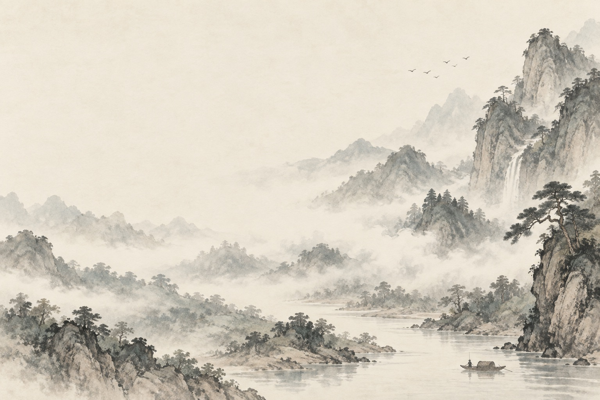
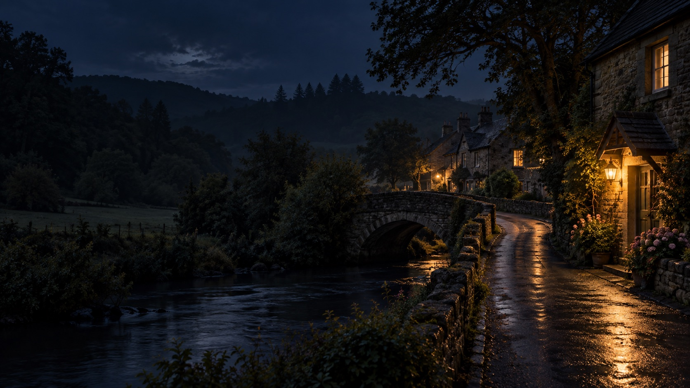
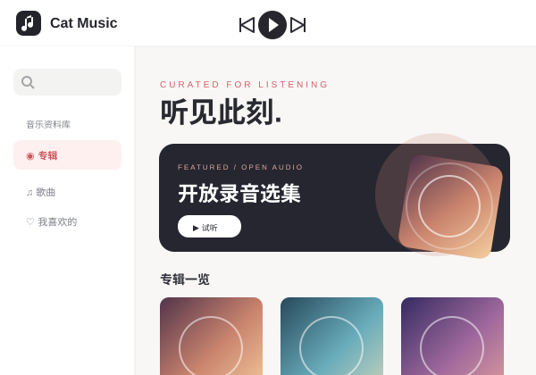

SELECTED WORKS
作品一览.
点开一张卡片，走进一个小世界。
所有作品都可以直接在浏览器中打开。
01 / 15
交互探索 · 3D从太阳出发，观察行星与月球。
02 / 15太阳系交互网站
漫游 · 3D在一方体素园林里，换个角度看江南。
03 / 15江南园林小景
空间设计 · 3D73㎡ 小家，试试三种不同的布置方案。
第二间房

04 / 15滚动阅读 · 水墨跟着六段山水故事，缓缓读完一卷。
05 / 15山水有归处
生活模拟 · 3D陪 Miri 做饭、画画，打理紫蓝巷的日常。
模拟时光

06 / 15氛围记录 · 雨声在雨夜的窗前，写下今天想记住的事。
07 / 15雨窗手记
亲子认知 · 英文启蒙36 张手绘果蔬闪卡，一起看图听英文。
08 / 15小小丰收
滚动叙事 · 海景跟随海与光，走过启程到归来的四幕。
09 / 15潮汐之间
小游戏 · 纸牌翻牌、整理花色，完成一局接龙。
10 / 15纸牌接龙
小游戏 · 街机驾驶像素战机，迎接一波波敌人。
11 / 15太空射击
小游戏 · 经典沿着网格前进，记得给自己留条路。
12 / 15贪吃蛇
小游戏 · 街机接住弹球，敲碎整面彩色砖墙。
13 / 15打砖块
小游戏 · 经典旋转和摆放方块，等一次漂亮的消行。
14 / 15俄罗斯方块
小游戏 · 横版动作穿过像素城堡，体验复古横版冒险。
横版动作 Demo

15 / 15音乐播放器 · 静态演示浏览示例专辑，试听两首开放授权录音。